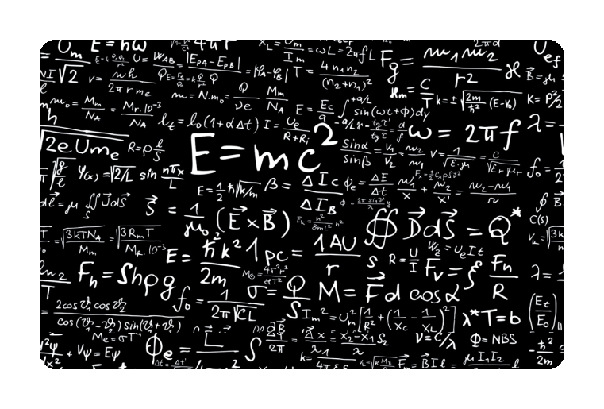
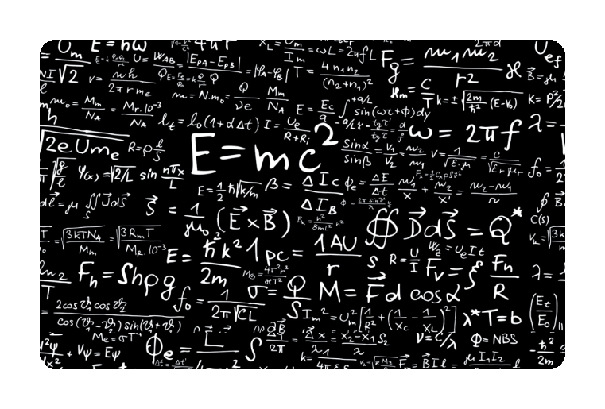

RELATIVIDADE GERAL
É fundamental dominar os conceitos básicos para ter um bom resultado no vestibular. Isso quer dizer que temas como teoria da relatividade serão cobrados nas grandes provas? Se você acredita que sim, está coberto de razão!
Essa teoria é uma das mais importantes que já foram desenvolvidas no campo da Física e, então, costumam aparecer em questões contextuais e práticas. Se você ainda não sabe o que ela é como pode surgir no vestibular, não se preocupe! Preparamos este conteúdo com as principais informações sobre a teoria da relatividade!
HISTÓRIA DA RELATIVIDADE GERAL
A Teoria da Relatividade foi desenvolvida no início do século XX pelo físico alemão Albert Einstein, um dos cientistas mais notáveis e brilhantes de todos os tempos.
A Relatividade transformou-se em uma das teorias mais importantes da Física, sendo a base para as posteriores demonstrações realizadas na Física, tais como a unidade do espaço e do tempo, da matéria e da energia e a equivalência entre as forças de gravidade e os efeitos da aceleração de um sistema.
A primeira parte da teoria de Einstein, a Teoria da Relatividade Especial, foi elaborada em 1905.
"Quanto mais rápido um objeto se movimenta, mais curto ele fica”. Esta teoria deduz que o comprimento, a massa e o tempo de um objeto variam de acordo com a sua velocidade..."
PRIMEIROS CONCEITOS
No ano de 1915, o físico alemão desenvolveu a segunda parte de sua teoria: a Teoria da Relatividade Geral, na qual usou a constatação da teoria anterior para redefinir a gravidade, examinando a influência do espaço e do tempo na atração entre os corpos.
A Teoria da Relatividade Geral tem como objetivo poder explicar as aparentes contradições entre as leis da relatividade e a lei da gravidade.
O princípio da relatividade foi surgindo ao longo da história da filosofia e da ciência como consequência da compreensão progressiva de que dois referenciais diferentes oferecem visões perfeitamente plausíveis, ainda que diferentes, de um mesmo efeito.
OUTRAS INTERPRETAÇÕES
O princípio da relatividade foi inserido na ciência moderna por Galileu e afirma que o movimento, ou pelo menos o movimento retilíneo uniforme, só tem algum significado quando comparado com algum outro ponto de referência.
Segundo o princípio da relatividade de Galileu, não existe sistema de referência absoluto pelo qual todos os outros movimentos possam ser medidos. Galileu referia-se à posição relativa do Sol (ou sistema solar) com as estrelas de fundo.
Com isso, elaborou um conjunto de transformações chamadas 'transformações de Galileu', compostas de cinco leis, para sintetizar as leis do movimento quanto a mudanças de referenciais.
Mas naquele tempo acreditava-se que a propagação eletromagnética, ou seja, a luz, fosse instantânea; e, portanto, Galileu e mesmo Newton não consideravam em seus cálculos que os acontecimentos observados fossem dissociados dos fatos.
Esse fenômeno que separava a luz do som, aqui na Terra, seria mais acentuado quando observado a grandes distâncias, e já mostrava, em fins do século XIX, a importância de estabelecer normas aplicáveis a uma teoria do tempo.
RELATIVIDADE NO ESPAÇO
Einstein imaginou as três dimensões do espaço e a dimensão do tempo juntas, como uma espécie de tecido que nos rodeia e que é deformado pela presença dos corpos celestes massivos, como os planetas e estrelas.
Essas deformações criam o que nós sentimos como força de gravidade. Então a Terra e os outros planetas permanecem em órbita não porque o Sol simplesmente os atrai, como pensava Newton.
Para Einstein, isso acontece porque o Sol é uma estrela tão massiva que os outros corpos seguem a curvatura que ela gera no tecido do espaço-tempo.
A relatividade geral permitiu explicar desde o nascimento do Universo até a órbita dos planetas e os buracos negros.
Até hoje, algumas de suas previsões são testadas e confirmadas pelos cientistas, que se surpreendem com a precisão das ideias do físico alemão. Por causa dela, ele se tornou uma das figuras mais icônicas da ciência mundial.
RELATIVIDADE NO TEMPO
Na Física Clássica, o tempo transcorre da mesma forma para que seja o referencial, para os dois corpos munidos de cronômetro, o tempo passaria da mesma forma, mesmo que um dos corpos estivesse em movimento e o outro em repouso.
Na Física Moderna, intervalos de tempos para uma pessoa em velocidade, próxima à velocidade da luz no vácuo, transcorrem mais lentamente do que intervalos de tempo medidos por outra pessoa em repouso, por exemplo, em relação à Terra.
Isso significa que uma hora para um observador em repouso na superfície da Terra pode corresponder a alguns minutos ou segundos para outro observador em alta velocidade.
Tal fato é conhecido como dilatação do tempo. Comprovamos a dilatação do tempo na prática dos satélites em órbita do nosso planeta, pois os relógios no interior desses satélites, em razão da alta velocidade, sofrem pequenos atrasos em relação a relógios que se encontram na superfície da Terra.
E = M • C²
Você já deve ter visto a seguinte equação: E=mc2.
Essa é a mais célebre equação científica do século 20 e foi desenvolvida por Albert Einstein. Ela estabelece a equivalência quantitativa da transformação de matéria em energia ou vice-versa.
Nela, E = energia, m = massa e c2 = velocidade da luz elevada ao quadrado. Sendo a velocidade da luz 300.000 Km/s ou, nas unidades do Sistema Internacional de Unidades, 300.000.000 m/s, a energia teoricamente obtenível da transformação completa de um único quilograma de massa é de astronômicos 9 x 1016 Joules [1kg x (300.000.000 m/s)2].
Para se ter ideia do significado desse número, segundo a equação de Einstein, a transformação completa de dez quilogramas de massa produziria uma quantidade de energia suficiente para evaporar toda a água da Baía de Guanabara. Sendo os componentes da equação:
E = energia
m = massa total
c = velocidade da luz (300 mil km/s)
• A equação da segunda lei de Newton, princípio fundamental da dinâmica:
• F = m.a Onde: F = força, m = massa e a = aceleração.
• A equação que define energia ou trabalho em função da força e distância:
• E = F.d Onde:
E = energia ou trabalho, F= força e d= distância.
No Sistema Internacional de Unidades, isso significa que, quando deslocamos uma massa de peso 1 Newton pela distância de 1 metro, produzimos 1 Joule de trabalho, para o que precisamos consumir 1 Joule de energia.